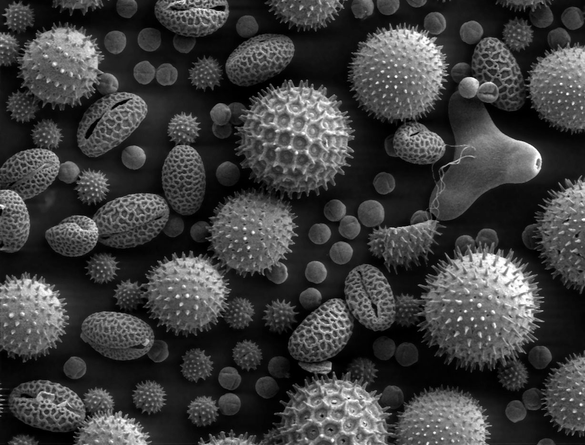

Welcome to my page!
Content here.
A scanning electron microscope (SEM) is a type of electron microscope that produces images of a sample by scanning the surface with a focused beam of electrons. The electrons interact with atoms in the sample, producing various signals that contain information about the surface topography and composition of the sample. The electron beam is scanned in a raster scan pattern, and the position of the beam is combined with the detected signal to produce an image. SEM can achieve resolution better than 1 nanometer. Specimens are observed in high vacuum in conventional SEM, or in low vacuum or wet conditions in variable pressure or environmental SEM, and at a wide range of cryogenic or elevated temperatures with specialized instruments.
 Wikipedia